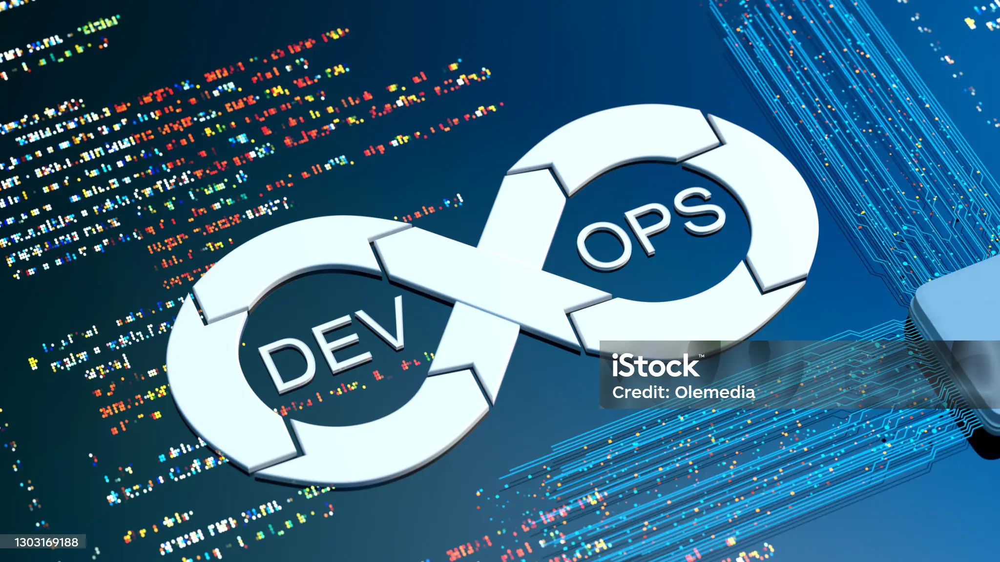

Introduction to CI/CD, Containerization, and Cloud-Native Architectures
Published on:
In the rapidly evolving world of software development, efficiency, scalability, and reliability are paramount. This has led to the widespread adoption of DevOps practices and cloud computing technologies. Among these, Continuous Integration and Continuous Deployment (CI/CD) pipelines, containerization with Docker and Kubernetes, and cloud-native architectures including serverless computing, stand out as essential components. This blog explores these technologies and their importance in modern software development.
Continuous Integration and Continuous Deployment (CI/CD) Pipelines
CI/CD pipelines are fundamental to the DevOps culture, fostering a seamless workflow from code development to deployment.
Continuous Integration (CI)
CI emphasizes frequent integration of code changes into a shared repository. Each integration is automatically verified by running tests, enabling early detection of errors. This process ensures that the codebase remains stable and functional.
Key Benefits of CI:
- Early Detection of Bugs: Frequent integrations allow for the identification and resolution of issues early in the development process.
- Improved Collaboration: CI promotes collaboration among developers, as code is integrated and tested regularly.
- Faster Feedback: Automated tests provide immediate feedback, accelerating the development cycle.
Continuous Deployment (CD)
CD takes CI a step further by automatically deploying every change that passes the CI tests to a production environment. This automation reduces manual intervention and ensures a consistent delivery pipeline.
Key Benefits of CD:
- Faster Time to Market: Automated deployments streamline the release process, enabling faster delivery of new features and updates.
- Reduced Risk: Automated deployments reduce the likelihood of human error, ensuring a more reliable release process.
- Scalability: CD allows for scalable and consistent deployments across multiple environments.
Containerization with Docker and Kubernetes
Containerization has revolutionized the way applications are developed, packaged, and deployed. Docker and Kubernetes are the leading technologies in this space.
Docker
Docker is a platform that enables developers to package applications and their dependencies into lightweight, portable containers. These containers can run consistently across different environments, from development to production.
Key Benefits of Docker:
- Portability: Docker containers can run on any platform that supports Docker, ensuring consistency across environments.
- Isolation: Containers encapsulate applications and their dependencies, preventing conflicts with other applications.
- Scalability: Containers can be easily scaled up or down, providing flexibility in resource management.
Kubernetes
Kubernetes is an open-source container orchestration platform that automates the deployment, scaling, and management of containerized applications. It builds on Docker's containerization capabilities by providing tools for managing clusters of containers.
Key Benefits of Kubernetes:
- Automated Deployment and Scaling: Kubernetes automates the deployment and scaling of containers, ensuring optimal resource utilization.
- Self-Healing: Kubernetes can automatically restart failed containers, replace them, and reschedule them to ensure high availability.
- Load Balancing: Kubernetes can distribute traffic across multiple containers, ensuring that applications remain responsive under load.
Cloud-Native Architectures and Serverless Computing
Cloud-native architectures leverage the full potential of cloud computing to build and run scalable, resilient applications.
Cloud-Native Architectures
Cloud-native applications are designed to take advantage of cloud services and infrastructure, enabling scalability, flexibility, and resilience. These architectures often utilize microservices, which break down applications into smaller, independent services that can be developed, deployed, and scaled independently.
Key Benefits of Cloud-Native Architectures:
- Scalability: Cloud-native applications can automatically scale based on demand, ensuring optimal performance.
- Resilience: By distributing services across multiple instances and regions, cloud-native architectures enhance fault tolerance and availability.
- Agility: Independent services enable faster development cycles and more flexible deployment strategies.
Serverless Computing
Serverless computing is a cloud-native development model that allows developers to build and run applications without managing servers. Instead, cloud providers automatically manage the infrastructure, allowing developers to focus on writing code.
Key Benefits of Serverless Computing:
- Cost Efficiency: Serverless computing charges based on actual usage, reducing costs for idle resources.
- Simplicity: Developers can focus on writing code without worrying about server management and maintenance.
- Scalability: Serverless platforms automatically scale resources up or down based on demand, ensuring efficient resource utilization.
Conclusion
CI/CD pipelines, containerization with Docker and Kubernetes, and cloud-native architectures including serverless computing, are transforming the landscape of software development. These technologies enable faster, more reliable, and scalable application delivery, helping organizations stay competitive in an ever-changing digital world. Embracing these practices not only enhances development efficiency but also ensures that applications are robust, resilient, and ready to meet the demands of modern users.
By integrating these technologies into your development workflow, you can harness the full potential of DevOps and cloud computing, paving the way for innovation and growth.
Comments
Share your tips and tricks with Me!